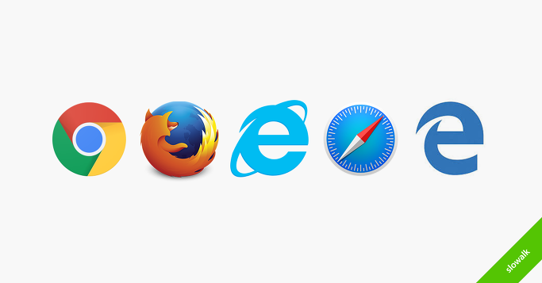
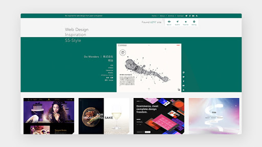

유튜브 클론코딩 by 정성철
1K Subscribers
-
웹 개발자를 위한 기초 기술. 첫번째 (Html) 유튜브 클론코딩 by 정성철 5K Views
-
웹 개발자를 위한 기초 기술. 두번째 (Css) 유튜브 클론코딩 by 정성철 4K Views
-
웹 개발자를 위한 기초 기술. 세번째 (JavaScript) 유튜브 클론코딩 by 정성철 6K Views